About the Trap Manager
The Trap Manager is a collection of routines that lets you add extra capabilities to system software routines.In order to execute system software routines, system software takes advantage of the unimplemented instruction feature of the MC680x0 family of microprocessors, which are the central processing units (CPUs) used in the Macintosh family of computers.
The MC680x0, like other microprocessors, executes a stream of instructions. Information encoded in an instruction indicates the operation to be performed by the microprocessor. The MC680x0 family of microprocessors recognizes a defined set of instructions. When the microprocessor encounters an instruction that it doesn't recognize, an exception is generated. An exception refers to bus errors, interrupts, and unimplemented instructions. When an exception occurs, the microprocessor suspends normal execution and transfers control to an appropriate exception handler.
In the MC680x0 family of microprocessors, all instructions starting with the hexadecimal digit $A are unimplemented instructions. These unimplemented instructions are also called A-line instructions. System software uses these unimplemented A-line instructions to execute system software routines. When you call a system software routine, the call to the system software routine is translated into an A-line instruction. The MC680x0 microprocessor doesn't recognize this A-line instruction, and transfers control to an exception handler.
System software provides an exception handler, called a trap dispatcher, to handle exceptions generated by A-line instructions. Whenever a MC680x0 microprocessor encounters an A-line instruction, an exception is generated, and the microprocessor transfers control to the trap dispatcher. An exception generated by an A-line instruction is called a trap.
When the trap dispatcher receives the A-line instruction, it looks into a table, called a trap dispatch table, to find the address of the called system software routine. After the trap dispatcher retrieves the address, it transfers control to the specified system software routine. Figure 8-1 illustrates the processing of instructions that include the A-line instructions that the microprocessor does not recognize.
Figure 8-1 How the CPU processes A-line instructions
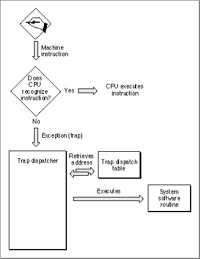
You can use the Trap Manager routines to read from and write to the two trap dispatch tables maintained by system software.
Trap Dispatch Tables
System software uses trap dispatch tables to locate the address of system software routines. System software maintains two trap dispatch tables: an Operating System trap dispatch table and a Toolbox trap dispatch table. Figure 8-2 illustrates the two trap dispatch tables.Figure 8-2 Trap dispatch tables
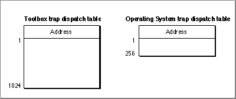
At system startup time, system software builds the trap dispatch tables and places them in RAM. The Operating System trap dispatch table contains 256 entries, and the Toolbox trap dispatch table contains 1024 entries. Each entry in the Operating System trap dispatch table contains a 32-bit address of an Operating System routine, and each entry in the Toolbox trap dispatch table contains a 32-bit address of a Toolbox routine. The system software routines can be located in either ROM or RAM.
Process for Accessing System Software Routines
As previously described, when your application calls a system software routine, an A-line instruction is sent to the microprocessor. The microprocessor does not recognize this instruction, and an exception is generated. This exception is then handled by the trap dispatcher. When the trap dispatcher receives the A-line instruction, it looks into one of the two trap dispatch tables to find the address of the called system software routine. When the trap dispatcher retrieves the address, it transfers control to the specified system software routine. For example, Figure 8-3 illustrates a call to the Toolbox procedure,FillRect. When the application calls theFillRectprocedure, an exception is generated. The trap dispatcher looks into the Toolbox trap dispatch table to find the address of theFillRectprocedure. When the address is found, the trap dispatcher transfers control to theFillRectprocedure.Figure 8-3 Accessing the FillRect procedure
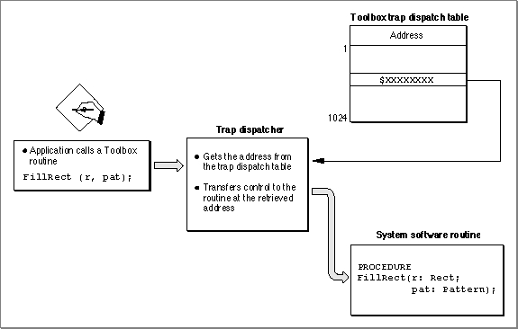
- Note
- Not all A-line instructions are defined. When the trap dispatcher receives an undefined A-line instruction, the trap dispatcher returns the address of the Toolbox procedure
Unimplemented. When called, theUnimplementedprocedure triggers a system error.
Patches and System Software Routines
You can modify the trap dispatch table so that the address that gets returned to the trap dispatcher points to a different routine instead of the intended system software routine; this is useful if you want to augment or override an existing system software routine. The routine that augment an existing system software routine is called a patch. The method of augmenting or overriding a system software routine is called patching a trap.For example, you can augment the
FillRectprocedure with your own procedureMyPatchFillRect. Figure 8-4 illustrates another call to the Toolbox procedureFillRect. When the application calls theFillRectprocedure the application-defined patchMyPatchFillRectis executed first. After the application-defined patchMyPatchFillRectcompletes its primary action, it transfers control (through a JMP instruction) to the originalFillRectprocedure.Figure 8-4 Augmenting the FillRect procedure with a single patch
- IMPORTANT
- Although this chapter describes patching in some detail, you should avoid any unnecessary patching of the system software. One very good reason to avoid patching is that is causes a performance reduction. The performance reduction is especially substantial when your patch is executed on a PowerPC processor-based Macintosh computer, where it is necessary to switch execution environments when entering and exiting your patch code. For more information about patching PowerPC system software, see Inside Macintosh: PowerPC System Software.
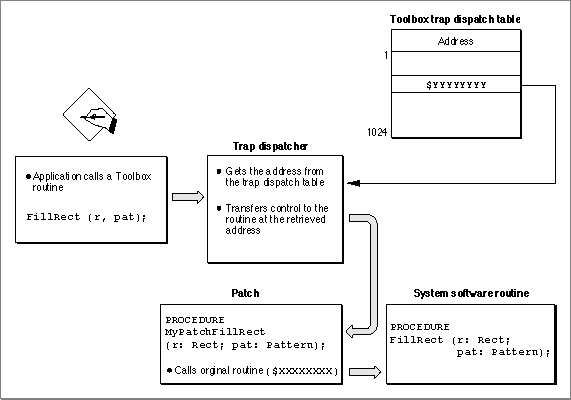
- Note
- To prevent dangling patch addresses, you must ensure that your patch routine is in a locked memory block while its address is in the trap dispatch table.
Daisy Chain of Patches
It is possible to patch a system software routine with more than just one patch; this is called a daisy chain of patches. Typically, you extract from the trap dispatch table the address of the routine you wish to patch, save this address, and then install your own patch routine. When your patch has completed its tasks, it should jump to the address you previously extracted from the trap dispatch table. In this way, the patches take the general form of a daisy chain. Each patch will execute in turn and jump to the next patch until the last link in the chain, which returns control to the trap dispatcher.A patch can be implemented as either a head patch, tail patch, or come-from patch. These are described in the next sections.
- IMPORTANT
- Although this chapter describes patching in some depth, you should rarely, if ever, find a need to use patches in an application. The primary purposes of patches, as their name suggests, are to fix problems and augment routines in ROM code.
Head Patch (Normal Patch)
A head patch, also referred to as a normal patch, is a routine that gets executed before the original system software routine. A head patch performs its primary action and then uses a jump instruction (JMP) to jump to the system software routine. Thus the head patch does not regain control after the execution of the system software routine. After the execution of the system software routine, control is transferred back to the trap dispatcher.Tail Patch
A tail patch is a routine that gets executed before the original system software routine and regains control after the execution of the system software routine. A tail patch uses a jump-subroutine instruction (JSR) to transfer control to the system software routine. After the system software routine returns control to the tail patch, the tail patch returns control to the trap dispatcher.
- WARNING
- You should never install tail patches in system software versions earlier than System 7. Tail patches may conflict with come-from patches, installed by Apple.
Come-From Patch (Used Only by Apple)
A come-from patch, also called a system patch, is a type of patch used only by Apple. Come-from patches are used to replace erroneous code or to add capabilities not in ROM.When a come-from patch is invoked, it examines the stack to determine where it was called from. If the come-from patch was invoked from a particular place in ROM (a spot where the code needs to be augmented or deleted), the come-from patch executes the modifying code. Otherwise, if the come-from patch was called from a part of the system that does not need to be augmented, it transfers control to the next routine in the daisy chain. This routine could be another patch or the system software routine.
Beginning with System 7, the addresses of come-from patches are permanently placed in the trap dispatch table at system startup time. The addresses of come-from patches are hidden and cannot be manipulated by any of the Trap Manger routines.
For example, if a system software routine has a come-from patch and if you use the Trap Manger function
NGetTrapAddressto retrieve the address of the system software routine, you will not get the address in the trap dispatch table (which is the address of the come-from patch).NGetTrapAddressinstead returns the address of the routine that is executed immediately after the come-from patch. This address could be the address of another patch or the system software routine.If a system software routine has a come-from patch and if you use the Trap Manager procedure
NSetTrapAddressto install a patch to the system software routine, the address of the patch is not written into the trap dispatch table. Instead, theNSetTrapAddressprocedure installs the address of the patch into the last come-from patch. The patch is executed after the completion of the come-from patch.
- WARNING
- In system software before System 7, if a come-from patch is invoked by a tail-patch, the come-from patch does not work correctly. The come-from patch never sees the ROM address on the stack--only the return address of the tail-patch.
Patch for One Application
If you install a patch into your application heap, the patch applies only to your application. When your application is switched out, your application's heap (and patch) is swapped out. For example, if you patchFillRectwith the patchMyPatchFillRect, theMyPatchFillRectpatch is executed only when theFillRectprocedure is called from your application.
- Note
- When running in System 7 or under MultiFinder in System 6, each application has its own copy of the trap dispatch tables. This ensures that an application's patches apply only when it is running and that they're discarded when the application quits.
Patch for All Applications
If you install a patch from a system extension during system startup, your patch is placed in the system heap and applies to all applications. For example, if you patch theFillRectprocedure with the patchMyPatchFillRectfrom a system extension, theMyPatchFillRectpatch is executed every time theFillRectprocedure is called, no matter which application calls it.A-Line Instructions
When your application calls a Toolbox or an Operating System routine, an A-line instruction is sent to the microprocessor. Each A-line instruction contains information about the called system software routine. Figure 8-5 shows the layout of an A-line instruction.Figure 8-5 A-line instruction format
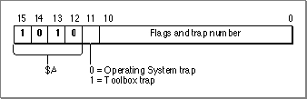
The high-order 4 bits of an A-line instruction have the hexadecimal value $A, hence the name A-line instruction. Bit 11 of the A-line instruction indicates the type of system software routine to be invoked: a value of 0 in bit 11 indicates an Operating System routine, a value of 1 in bit 11 indicates a Toolbox routine. The trap number in an A-line instruction is used as an index into the appropriate dispatch table. The meaning of the flags vary accordingly to the type of A-line instruction.
When your application calls a system software routine (thereby generating an exception), the microprocessor pushes an exception stack frame onto the stack. Figure 8-6 shows a typical exception stack frame. After pushing the exception stack frame on the stack, the microprocessor transfers control to the trap dispatcher.
Figure 8-6
Exception stack frame (on Macintosh computers with a MC68020 microprocessor or greater)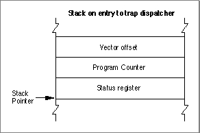
The trap dispatcher discards the status register and vector offset. Depending on whether the A-line instruction is used to invoke an Operating System routine or a Toolbox routine, the trap dispatcher deals with the stack and registers in two very different ways, as described in the next section, "A-line Instructions for Operating System Routines," and in the section "A-Line Instructions for Toolbox Routines" beginning on page 8-14.
- Note
- The exception handler is located at address $28 on computers with an MC68000 microprocessor and at address $28 offset from the address in the microprocessor's Vector Base Register (VBR) on computers with other MC680x0 microprocessors. Consult the relevant microprocessor handbook for the precise details of exception handling on the MC680x0 microprocessor of interest to you.
A-Line Instructions for Operating System Routines
An Operating System trap is an exception that is caused by an A-line instruction that executes an Operating System routine.When dispatching an Operating System trap, the trap dispatcher extracts the trap number from the A-line instruction and uses it as an index into the Operating System trap dispatch table. The entry in the Operating System trap dispatch table contains the address of the desired Operating System routine. Figure 8-7 illustrates an A-line instruction for an Operating System routine.
Figure 8-7 An A-line instruction for an Operating System routine
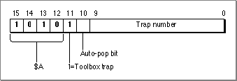
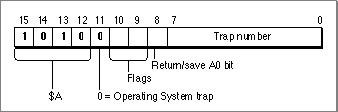
Bit 11 tells the trap dispatcher that this A-line instruction invokes an Operating System routine. Two flag bits, bit 10 and bit 9, are reserved for use by the Operating System routine itself and are discussed in detail in "Flag Bits" on page 8-14. Bit 8 indicates whether the value in register A0 is returned from the Operating System routine. If bit 8 is 0, the value in register A0 is returned from the Operating System routine. If bit 8 is 1, the value in register A0 is not returned by the Operating System routine. As previously described, the trap number is in bits 7-0 and is used to determine which of the 256 possible Operating System routines is executed.
For example, a call to the Operating System function
GetPtrSizeis translated to the A-line instruction $A021. This A-line instruction causes the microprocessor to transfer control to the trap dispatcher, which deals with any instruction of the form $Axxx. The trap dispatcher first saves registers D0, D1, D2, A1, and, if bit 8 is 0, A0. The trap dispatcher places the A-line instruction itself into the low-order word of register D1 so that the Operating System routine can inspect the flag bits. Next, the trap dispatcher examines the other bits in the A-line instruction. The value (0) of bit 11 indicates thatGetPtrSizeis an Operating System routine, and that the value in bits 7-0 is the index into the Operating System trap dispatch table. The trap dispatcher uses the index (which is 33 in this example) to find the address of theGetPtrSizefunction in the Operating System trap dispatch table. When the address is found, the trap dispatcher transfers control to theGetPtrSizefunction.Figure 8-8 illustrates the stack after the trap dispatcher has transferred control to an Operating System routine.
Figure 8-8 The stack on entry to an Operating System routine
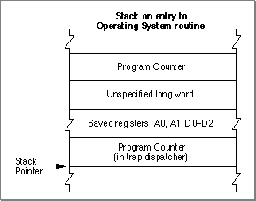
The Operating System routine may alter any of the registers D0-D2 and A0-A2, but it must preserve registers D3-D7 and A3-A6. The Operating System routine may return information in register D0 (and A0 if bit 8 is set). To return to the trap dispatcher, the Operating System routine executes the RTS (return from subroutine) instruction.
When the trap dispatcher resumes control, first it restores the value of registers D1, D2, A1, A2, and, if bit 8 is 0, A0. The values in registers D0 and, if bit 8 is 1, in A0 are not restored.
Calling Conventions for Register-Based Routines
Register-based routines receive their parameters from microprocessor registers, and they pass their results in microprocessor registers. Virtually all Operating System routines are register-based routines.An Operating System routine returns information only in registers D0 and, if bit 8 is 1, A0. The stack and all other registers are unchanged.
Many Operating System routines return a result code in the low-memory word of register D0 to report whether the requested operation was performed successfully. A result code of 0 indicates that the routine completed successfully; any other value typically indicates an error. Just before the trap dispatcher finishes execution, it tests the low-order word of register D0 with a TST.W instruction to set the condition codes of the microprocessor.
- Note
- Calling conventions for PowerPC microprocessor-based Macintosh computers are different from the calling conventions described for in this section. For information about calling conventions for PowerPC processor-based Macintosh computers, see Inside Macintosh: PowerPC System Software.
Parameter-Passing Conventions for Operating System Routines
By convention, register-based routines normally use register A0 for passing addresses (such as pointers to data objects) and register D0 for other data values (such as integers).For routines that take more than two parameters, the parameters are normally collected in a parameter block in memory and a pointer to the parameter block is passed in register A0. See the description of an individual routine in the appropriate Inside Macintosh book for exact details.
Function Results
Most Operating System functions return their function result (or result code) in register D0. Parameters are returned through register A0, usually as a pointer to a parameter block.Whether the trap dispatcher preserves register A0 depends on the setting of bit 8 in the A-line instruction. If bit 8 is 0, the trap dispatcher saves and restores register A0; if it's 1, the routine passes back register A0 unchanged. Thus, bit 8 of the A-line instruction should be set to 1 only for those routines that use register A0 to return information. The trap macros automatically set this bit correctly for each routine.
To see in which register the function passes the function result, see the description of the individual function in the appropriate Inside Macintosh book.
Flag Bits
Many Operating System routines use the flag bits in an A-line instruction to encode additional information used by the routine. For example, the A-line instructions that invoke Memory Manager routines define the two flag bits like this:
Bit Explanation 9 If 1, initialize all bytes in the allocated memory to 0.
If 0, do not initialize all bytes in the allocated memory to 0.8 If 1, allocate memory from the system heap.
If 0, allocate memory from the application heap.These two bits are defined in assembly language as:
CLEAR EQU $200 ;initialize block to zero SYS EQU $400 ;use the system heapWhen used with a Memory Manager A-line instruction, these modifiers cause flag bits 9 and 10, respectively, to be set. They could be used in an assembly-language instruction sequence likeMOVEQ #124,D0 ;need 124 bytes _NewPtr SYS,CLEAR ;allocate requested memory in ; system heap and initialize to ; zeroesTheSYSmodifier specifies allocation from the system heap, regardless of the value of the global variableTheZone, and theCLEARmodifier specifies that the Memory Manager should initialize the block contents to zero. For further details, consult Inside Macintosh: Memory.A-Line Instructions for Toolbox Routines
A Toolbox trap is an exception that is caused by an A-line instruction that executes a Toolbox routine.When dispatching a Toolbox trap, the trap dispatcher extracts the trap number from the A-line instruction and uses it as an index into the Toolbox trap dispatch table. The index points to the entry in the Toolbox trap dispatch table that contains the address of the desired Toolbox routine. Figure 8-9 illustrates an A-line instruction that is used to access a Toolbox routine.
Figure 8-9 An A-line instruction for a Toolbox routine
Bit 11 tells the trap dispatcher that this A-line instruction is used to access a Toolbox routine. Bit 10 is the auto-pop bit. Bits 9-0 contain the trap number which, as previously described, determine which of the 1024 possible Toolbox routines is executed. The auto-pop bit is described in detail in "The Auto-Pop Bit" on page 8-20.
For example, a call to the Toolbox function
WaitNextEventis translated to the A-line instruction $A860. This A-line instruction causes the microprocessor to transfer control to the trap dispatcher, which deals with any instruction of the form $Axxx. The trap dispatcher examines the other bits in the A-line instruction. The value (0) of bit 11 indicates thatWaitNextEventis a Toolbox routine and that the value in bits 9-0 is the index into the Toolbox trap dispatch table. The trap dispatcher uses the index (which is $60 in this example) to find the address of theWaitNextEventfunction in the Toolbox trap dispatch table. When the address is found, the trap dispatcher transfers control to theWaitNextEventfunction.Figure 8-10 illustrates the stack after the trap dispatcher has transferred control to a Toolbox routine.
Figure 8-10 Stack when entering a Toolbox routine
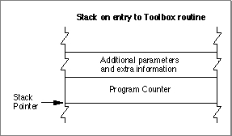
The value of the Program Counter that is left on the stack before entry to the Toolbox routine points to the instruction that is executed after the completion of the Toolbox routine.
After the trap dispatcher completes execution, the internal status of the stack is restored, and normal execution resumes from the point at which processing was suspended.
A Toolbox routine changes the Stack Pointer in register A7 and pops the return address and any input parameters. A routine might also alter registers D0-D2, A0, and A1.
- WARNING
- Some Toolbox routines (for example the
LongMulprocedure described in the chapter "Mathematical and Logical Utilities" in this book) preserve more than the required set of registers. However, you should assume all of registers D0-D2, A0, and A1 are altered by Toolbox routines.Calling Conventions for Stack-Based Routines
Stack-based routines receive their parameters on the stack and return their results on the stack. Virtually all Toolbox routines are stack-based routines.Most Toolbox routines follow Pascal calling conventions; that is, Toolbox routine parameters are evaluated from left to right and are pushed onto the stack in the order in which they are evaluated. Function results are returned by value or by address on the stack. Space for the function result is allocated by the caller before the parameters are pushed on the stack. The caller is responsible for removing the result from the stack after the call.
Figure 8-11 illustrates Pascal calling conventions. In this example, a routine calls the application-defined function
- Note
- Calling conventions for PowerPC microprocessor-based Macintosh computers are different from the calling conventions described in this section. For information about calling conventions for PowerPC processor-based Macintosh computers, see Inside Macintosh: PowerPC System Software.
MyPascalFn. When the application calls the functionMyPascalFn, the application must first make room on the stack for the function result, then push the parameters on the stack in left-to-right order.Figure 8-11 Pascal calling convention
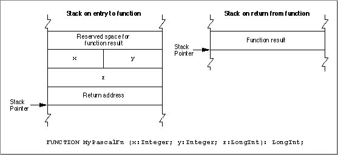
Figure 8-12 illustrates C calling conventions. In this example, a routine calls the application-defined function
MyCFn. When the application calls the functionMyCFn, the application pushes the parameters on the stack in right-to-left order. The function result is returned in register D0, and not on the stack.Figure 8-12 C calling convention
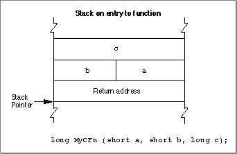
Parameter-Passing Conventions for Toolbox Routines
All variable parameters (parameters of typeVAR) are passed as pointers to the actual storage location. In the case of byte-sized types, parameters of typeVARmay have odd values.Nonvariable parameters are passed in different ways, depending on the type of the parameter. Values of type
Boolean, elements of an enumerated type with fewer than 128 elements, and subranges within the range -128 to 127 are passed as signed byte values. Values of typeIntegerand,Charand all other enumerations and subranges are passed as signed word values. Pointers and values of typeLongIntare passed as signed 32-bit values. Table 8-1 summarizes the parameter-passing conventions.A parameter of type
SETis passed by rounding its size up to the next whole word, if necessary, then pushing its value so that the lowest-order word is pushed last. In the case of a byte-sizeSET, the called procedure accesses only the low-order half of the word that is pushed.
- Note
- A byte pushed on the stack occupies the high-order byte of the word allocated for it, according to conventions for the MC680x0 microprocessors.
- WARNING
- A value of type
Charis passed as a word value. The value occupies the low-order half of the word.Function Results
Function results are returned by value or by address on the stack. Space for the function result is allocated by the caller before the parameters are pushed. The caller is responsible for removing the result from the stack after the call.For types
Boolean,Char, andIntegerand for enumerated and subrange types, the caller allocates a word on the stack to make space for the function result. Values of typeBoolean, enumerated types with fewer than 128 elements, and subranges within the range -128 to 127 are returned as signed byte values. The value is placed in the high-order byte of the word.Values of type
IntegerandCharand all enumerated and subrange types not covered above are returned as signed word values.Pointers and values of type
LongIntare returned as signed 32-bit values. Values of typeRealare returned as 32-bit real values. For types whose values are greater than 4 bytes in size, the caller pushes a pointer to a temporary location into which the function places the result; these types includeDouble(8 bytes),Comp(8 bytes), andExtended(10 or 12 bytes); typesSET,ARRAY,RECORD; and strings greater than 4 bytes in size.For a 1-byte
SET, for typesSET,ARRAY, andRECORD, and for strings whose size is one word, the caller allocates a word on the stack. For typesSET,ARRAY, andRECORDand strings whose size is two words, the caller allocates a long word on the stack.The conventions for returning results of functions are summarized in Table 8-2.
- Note
- A 1 byte-size return value occupies the high-order byte of the word allocated for it.
The Auto-Pop Bit
The auto-pop bit is bit 10 in an A-line instruction for a Toolbox routine. Some language systems prefer to generate jump-subroutine calls (JSR) to intermediate routines, called glue routines, which then call Toolbox routines instead of executing the Toolbox routine directly. This glue method would normally interfere with Toolbox traps because the return address of the glue subroutine is placed on the stack between the Toolbox routine's parameters and the address of the place where the glue routine was called from (where control returns once the Toolbox routine has completed execution).The auto-pop bit forces the trap dispatcher to remove the top 4 bytes from the stack before dispatching to the Toolbox routine. After the Toolbox routine completes execution, control is transferred back to the place where the glue routine was called from, not back to the glue routine.
Most development environments, including MPW, do not use this feature.
About Trap Macros
A trap macro is an assembly-language macro that assembles into an A-line instruction, used for calling a Toolbox or Operating System routine from assembly language. The names of all trap macros begin with the underscore character (_), followed by the name of the corresponding routine. As a rule, the macro name is the same as the name used to call the routine from Pascal. For example, to call the Window Manager functionNewWindow, you should use an instruction with the macro name_NewWindow. There are some exceptions, however, in which the spelling of the macro differs from the name of the Pascal routine itself; these are noted in the documentation for the individual routines.Trap macros for Toolbox routines take no arguments; any parameters must be pushed on the stack before invoking the routine. See "Calling Conventions for Stack-Based Routines" on page 8-16 for more information. Trap macros for Operating System routines may have as many as three optional arguments. The first argument, if present, is used to load a register with a parameter value for the routine you're calling. The remaining arguments control the settings of the various flag bits in the A-line instruction.
About Routine Selectors
A routine selector is a value that is pushed on the stack to select a particular routine from a group of routines to be executed. Many trap macros take routine selectors. For example, the trap macro_HFSDispatchhas the possibility of calling 42 different system software routines. Hence, the trap macro has 42 different routine selectors. The routine selector that is passed on the stack (for_HFSDispacthto access) selects which of the 42 software routines_HFSDispatchexecutes.Most system software routines that are accessed through a trap macro and a routine selector also have a corresponding macro that expands to call the original trap macro and automatically puts the correct routine selector on the stack. For example, the trap macro
_GetCatInfoexpands to call_HFSDispatchand places the selector $0009 on the stack after the parameters.